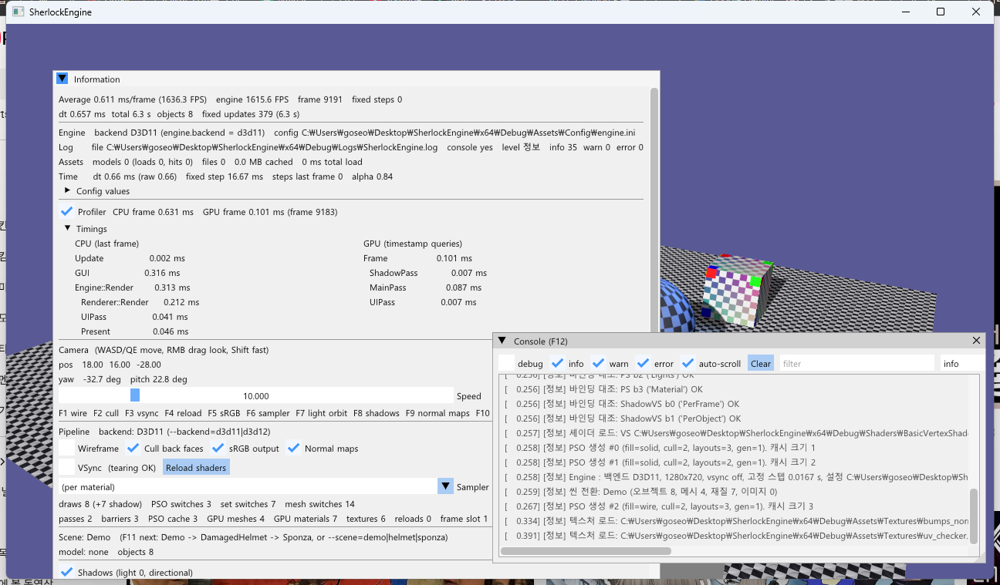
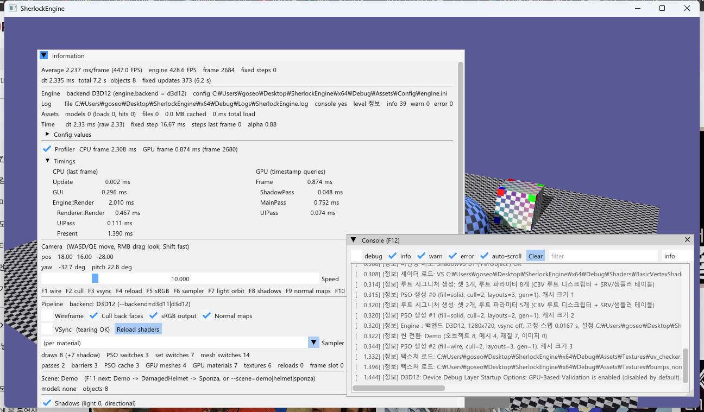
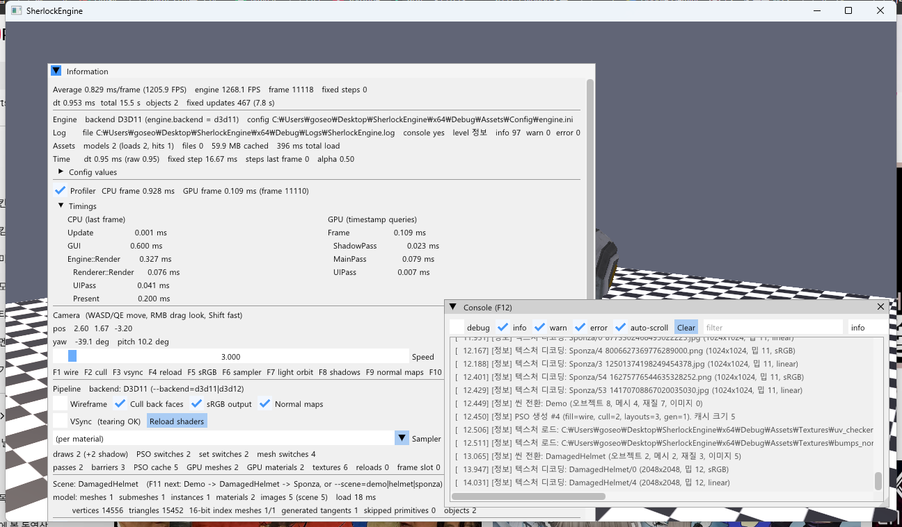
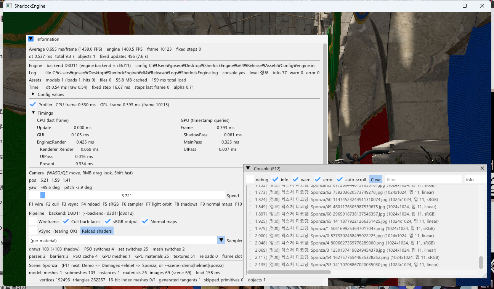

10단계 · 엔진 코어 정리
"TestApp 이 엔진을 조립하는 구조"에서 "엔진 위에 앱을 올리는 구조"로 바꿨습니다. Core/ 에 Logger·Config·Time·Profiler·AssetManager·Engine 이 들어왔고, AppBase 는 창과 메시지 루프만 남았습니다. 백엔드는 Assets\Config\engine.ini 의 backend 한 줄이 고르고, 로그는 파일·콘솔·VS 출력 창·ImGui 콘솔 네 곳에 남습니다. 프로파일러는 CPU 구간과 함께 RHI 타임스탬프 쿼리로 두 백엔드의 GPU 구간을 잽니다. 실행 파일은 Windows 서브시스템이 되었고 Debug 에서만 콘솔을 엽니다. 이것으로 사용자가 요청한 범위(10단계까지)가 끝납니다.
0단계에 자유 함수로 둔 Log::Info/Warn/Error 뒤에 Logger 본체(레벨·싱크·히스토리)를 넣었고, 8단계의 --backend= 는 설정 파일 값을 덮어쓰는 형태로 남았습니다. Engine 은 소유와 프레임 순서만 갖습니다 — Device·Renderer·Scene·Camera·Input·Time 을 만들고 BeginFrame → Render → EndFrame 을 정할 뿐, 로직은 각 시스템에 그대로 남아 있습니다. 프로파일러의 GPU 구간은 6단계 CommandList 에 WriteTimestamp(slot) 하나를 더한 것으로, D3D11 은 쿼리 세트 여섯 개를 돌려 쓰고 D3D12 는 프레임 슬롯의 펜스를 지난 뒤에 쿼리 힙을 읽습니다.
1.요약
| 로드맵 항목 | 구현 | 확인 |
|---|---|---|
| Logger (레벨·파일·ImGui 콘솔·OutputDebugString), std::cout 교체 (D16) | Core/Log: Level Debug/Info/Warn/Error, SetMinLevel, 싱크 네 개, 링 히스토리 4,000줄, 뮤텍스. std::cout 0곳 | Debug 실행 로그 파일 551줄, 콘솔 창(F12)에 같은 줄 |
| AssetManager, PathManager, Time(고정 스텝) | AssetManager: 경로 → Model 캐시 + 파일 바이트; Paths(0단계) 유지; Time: 클램프·FPS·누적기 | 헬멧 → Sponza → 데모 → 헬멧: 로드 2, 캐시 적중 1. 고정 스텝 60 Hz 456회/7.6 s |
| Engine 클래스, AppBase 는 창과 루프만 (D14) | Engine 소유: Device·Renderer·Scene·Camera·Input·Time·AssetManager·Config. AppBase: 창·루프·ImGui 컨텍스트·Win32 백엔드 | TestApp 은 GetEngine() 만 쓴다. 렌더 순서는 Engine::Render |
| Profiler: CPU 구간 + GPU 타임스탬프 (RHI Query, 두 백엔드) | ProfileScope·GpuProfileScope, RHI WriteTimestamp/GetTimestampResults, D3D11 쿼리 세트·D3D12 쿼리 힙 | 패널: Frame/ShadowPass/MainPass/UIPass ms, D3D11·D3D12 모두. Debug Layer 경고 0 |
| Windows 서브시스템, Debug 에서 AllocConsole (D19) | SubSystem=Windows 4구성, wWinMain, Logger 가 AttachConsole → (Debug) AllocConsole | Release 는 콘솔 없이 실행되고 로그 파일이 남는다. 캡처 스크립트의 stdout 파이프도 그대로 동작 |
| 완료 기준 | engine.ini 의 backend = d3d12 만으로 D3D12 실행. 로그가 파일과 ImGui 콘솔에 | 그림 2, 그림 1 |
2.Logger (D16 본체)
0단계는 std::cout 29곳을 Log::Info/Warn/Error 로 모으고 "클래스가 아니라 자유 함수 네임스페이스로 둔 것은 10단계에서 호출부를 다시 고치지 않기 위해서"라고 적어 두었습니다. 실제로 그렇게 됐습니다 — 호출부 100여 곳은 한 줄도 바뀌지 않았고 Log.cpp 의 Emit 뒤만 채웠습니다.
// Core/Log.h — 파사드는 그대로, 뒤에 본체
enum class Level : uint8_t { Debug, Info, Warn, Error };
struct InitDesc { bool console, allocConsole; std::wstring filePath; Level minLevel; size_t historyCapacity; };
void Init(const InitDesc&); void Shutdown();
void Debug/Info/Warn/Error(const char* fmt, ...);
void SetMinLevel(Level); void CopyHistory(std::vector<Entry>&); uint64_t GetHistoryVersion();
// Emit: 레벨 필터 → 서식 → 뮤텍스 안에서 네 싱크
if (level < s.minLevel) return;
std::lock_guard<std::mutex> lock(s.mutex);
if (s.console) std::fputs(line, stdout); // 콘솔 (파이프면 파이프)
WriteToDebugger(line); // OutputDebugStringW — VS 출력 창, D3D Debug Layer 와 같은 곳
if (s.file.is_open()) { s.file << stamp << line; s.file.flush(); } // 크래시 직전 줄이 남아야 로그다
s.history.push_back({ level, time, body }); ++s.historyVersion; // ImGui 콘솔파일에는 초 단위 시각을 붙이고([ 7.257]), UTF-8 BOM 으로 시작해 메모장이 한글을 바로 읽습니다. 줄마다 flush 하는 비용은 초당 수백 줄 수준에서 보이지 않았고, 크래시 직전 줄이 남는 쪽이 더 중요합니다. 히스토리는 deque 링(4,000줄)이고, 콘솔은 버전 번호로 "새 줄이 왔는지"를 확인한 뒤에만 복사합니다. 레벨 필터는 최소 레벨 미만을 어디에도 내보내지 않으므로, 기본 레벨(info)에서는 Debug 로그의 서식 비용조차 들지 않습니다. 예외·ThrowIfFailed 는 여전히 쓰지 않습니다 — 0단계의 "엔진 API 는 bool" 결정을 유지했습니다.
3.Config: 백엔드는 설정 파일이 고른다
; Assets\Config\engine.ini — exe 옆으로 복사된다 (CopyAssets)
[engine]
backend = d3d11 ; d3d11 | d3d12 — 이 값만 바꿔 백엔드를 고른다
width = 1280
height = 720
vsync = false
debuglayer = true
scene = demo ; demo | helmet | sponza
fixedstep = 0.0166667
[log]
level = info
file = Logs\SherlockEngine.log
console = trueCore/Config 는 "key = value" 와 "[section]" 만 아는 INI 파서입니다. 키는 section.key 로 평탄화하고 소문자로 저장하며, 값은 문자열로 두고 GetInt/GetFloat/GetBool 이 변환합니다. 파싱은 로그를 남기지 않습니다 — Logger 보다 먼저 읽히기 때문입니다(로그 파일 경로가 여기서 나옵니다). 오류는 모아 두었다가 Logger 가 열린 뒤 경고로 냅니다. 실행 인자 --backend=·--scene= 는 8~9단계의 이름 그대로 설정 값을 덮어쓰고, 그 밖의 --section.key=value 도 일반형으로 받습니다. 설정 파일이 없으면 기본값으로 계속 실행합니다(경고 한 줄).
4.Time: 고정 스텝 누적기
Luna 의 GameTimer(QueryPerformanceCounter)를 시계로 두고 Core/Time 이 그 위에 (1) 델타 클램프(0.25 s — 디버거 정지·창 이동 뒤의 거대한 dt 를 자른다), (2) 0.5 초 창 FPS, (3) 고정 스텝 누적기를 얹습니다. Fiedler 의 "Fix Your Timestep"3 그대로입니다: 렌더가 시간을 만들고 고정 갱신이 fixedStep 단위로 소비하며, 남은 시간은 다음 프레임으로 넘기고 보간 알파(accumulator / fixedStep)도 제공합니다. 한 프레임에 여덟 번까지만 따라잡고 그 이상은 누적을 버려 죽음의 나선을 막습니다.
// AppBase::Run
const float dt = m_engine.BeginFrame(); // Time.Tick + Profiler 프레임 + ImGui 렌더러 NewFrame
while (time.ConsumeFixedStep()) OnFixedUpdate(time.GetFixedStep()); // 0..8 회
OnUpdate(dt);TestApp 의 OnFixedUpdate 는 아직 호출 수와 누적 시간만 셉니다(패널 "fixed updates 456 (7.6 s)" — 60 Hz). 물리가 들어오면 이 자리에 들어갑니다. 애니메이션은 지금까지처럼 가변 dt 의 OnUpdate 에 있습니다.
5.Engine 과 AppBase (D14)
// Core/Engine.h — 소유와 프레임 순서만
class Engine
{
bool Initialize(const Config&, const Desc&); // 백엔드 = config "engine.backend" → RHI::CreateDevice → Renderer → ImGui 렌더러
float BeginFrame(); void Render(); void EndFrame(); void OnResize(int, int);
RHI::Device& GetDevice(); Renderer& GetRenderer(); Scene& GetScene(); Camera& GetCamera();
Input& GetInput(); Time& GetTime(); AssetManager& GetAssets(); const Config& GetConfig();
private:
std::unique_ptr<RHI::Device> m_device; // 선언 순서 = 생성 순서. Renderer 가 뒤에 있어야 먼저 파괴된다
Renderer m_renderer; AssetManager m_assets; Scene m_scene; Camera m_camera; Input m_input; Time m_time;
};
// Engine::Render — 6단계 프레임 구조. 앱은 이 순서를 모른다
m_device->BeginFrame();
{ GpuProfileScope frame(cmd, "Frame");
m_renderer.Render(m_scene, m_camera, m_time.GetTotalTime()); // 그림자 + 메인 (안에서 GPU 구간)
m_renderer.BeginUIPass(); m_device->RenderImGui(); m_renderer.EndUIPass(); }
m_device->EndFrame();AppBase 에 남은 것은 창 등록·생성, 메시지 루프, ImGui 컨텍스트와 Win32 백엔드, 설정·Logger 초기화 순서입니다. 앱이 구현하는 것은 OnInitialize / OnUpdate / OnFixedUpdate / OnGUI / OnFocusLost 다섯 개이고, GetEngine() 으로 시스템에 접근합니다. 전역 g_appBase 는 D14 의 결론대로 유지했습니다(창이 하나인 동안에는 바꿔도 얻는 것이 없습니다). Engine 이 God object 가 되지 않도록 지키는 규율은 "소유와 순서만"입니다. 씬 구성은 앱이, 그리기는 Renderer 가, 캐시는 AssetManager 와 Renderer 캐시가 각각 맡습니다. 초기화 순서가 하나 바뀌었습니다 — ImGui 컨텍스트를 Engine 보다 먼저 만듭니다. Engine 이 Device 의 ImGui 렌더러 백엔드를 붙이기 때문입니다.
6.Windows 서브시스템과 콘솔 (D19)
D19 의 발전 방향 그대로입니다: SubSystem=Windows + wWinMain5. 콘솔은 Logger 가 처리합니다. GetStdHandle(STD_OUTPUT_HANDLE) 이 이미 유효하면(캡처 스크립트가 파이프로 리다이렉트한 경우 — 핸들 상속) 그대로 쓰고, 아니면 AttachConsole(ATTACH_PARENT_PROCESS)4 로 부모 콘솔(명령줄에서 실행)에 붙고, 그것도 없으면 allocConsole(Debug 빌드)일 때 AllocConsole 로 하나 엽니다. 콘솔에 붙거나 새로 연 경우에는 freopen_s(CONOUT$) 로 stdout 을 다시 연결하고, UTF-8 코드페이지를 맞춥니다. Release 빌드는 탐색기에서 더블클릭하면 렌더 창 하나만 뜨고, 로그는 파일과 VS 출력 창과 F12 콘솔에 남습니다(11절에서 확인).
7.Profiler: CPU 구간 + GPU 타임스탬프
CPU 구간은 ProfileScope scope("Update") RAII 로 감싸고 QueryPerformanceCounter 로 잽니다. 중첩 깊이를 함께 저장해 패널이 들여쓰기로 보여 줍니다. 프레임마다 목록을 만들고 Profiler::BeginFrame 에서 "직전 프레임"으로 넘기므로 패널은 항상 완성된 프레임을 봅니다. GPU 구간은 GpuProfileScope(cmd, "MainPass") 가 시작·끝 슬롯 두 개를 소비하고, Device 가 몇 프레임 뒤에 돌려주는 틱을 프레임 번호로 짝지어 밀리초로 바꿉니다. 그래서 GPU 결과는 CPU 결과보다 2~6 프레임 늦고 패널이 그 프레임 번호를 같이 보여 줍니다.
7.1 RHI 확장: WriteTimestamp / GetTimestampResults
// RHI/CommandList.h
virtual void WriteTimestamp(uint32_t slot) = 0; // 0 ≤ slot < kMaxTimestamps(32), 프레임 안에서 증가 순서
// RHI/Device.h — 가장 최근에 완료된 프레임의 틱. CPU 를 기다리지 않는다
virtual bool GetTimestampResults(uint64_t* ticks, uint32_t count, uint64_t& frequency, uint64_t& frameNumber) = 0;인터페이스가 이 둘뿐인 것은 "기록은 커맨드 리스트, 읽기는 장치"라는 두 API 의 공통점만 남겼기 때문입니다. 타임스탬프는 두 API 모두 명령 스트림의 그 지점을 GPU 가 지날 때(bottom-of-pipe) 찍히고1, 틱을 주파수로 나눠 초를 얻습니다. 슬롯을 프레임 안에서 순서대로 쓰게 한 것은 D3D12 에서 "기록된 범위만 Resolve" 하기 위해서입니다.
7.2 D3D11: 쿼리 세트 6개
D3D11_QUERY_TIMESTAMP 는 End 만 부르고, D3D11_QUERY_TIMESTAMP_DISJOINT 가 프레임을 Begin/End 로 감싸 주파수와 "이 구간의 틱을 믿어도 되는지"를 줍니다2. 세트 하나 = DISJOINT 1 + TIMESTAMP 32. 처음에는 세트 3개로 "두 프레임 전"을 읽었는데 Debug Layer 가 프레임마다 "End is being invoked on a Query, where the previous results have not been obtained yet" 를 냈습니다 — DXGI 가 최대 3 프레임을 큐에 둘 수 있어 두 프레임 전 쿼리가 아직 GPU 에 있는 일이 잦고, 결과를 안 읽은 쿼리에 다시 End 하면 경고입니다. 세트 6개로 늘리고 다시 쓰기 직전(6 프레임 뒤)에 GetData(DONOTFLUSH) 로 읽으니 경고가 0 이 되었습니다. 준비되지 않았으면(S_FALSE) 그 세트는 버리고 계속합니다 — 기다리면 그것이 곧 GPU 동기화라 프로파일러가 측정 대상을 바꿔 버립니다.
7.3 D3D12: 쿼리 힙 + 리드백
// 힙: kFrameCount × 32 개. 리드백 버퍼: 같은 배치의 uint64
WriteTimestamp: m_list->EndQuery(heap, TIMESTAMP, frameIndex * 32 + slot); written[frameIndex] = max(slot + 1)
EndFrame: m_list->ResolveQueryData(heap, TIMESTAMP, frameIndex * 32, written, readback, frameIndex * 32 * 8); // Close 직전
BeginFrame: 펜스 대기 → ReleaseGarbage → ReadTimestamps(frameIndex) // Map(READBACK) 이 곧 읽기. 프레임 N − 2 의 결과
frequency: m_queue->GetTimestampFrequency()8단계의 프레임 슬롯 구조가 그대로 쓰입니다: 슬롯을 재사용하는 BeginFrame 은 이미 그 프레임의 펜스를 지났으므로 리드백 버퍼를 읽어도 안전합니다. 기록하지 않은 쿼리를 Resolve 하면 값이 정의되지 않으므로(그리고 Debug Layer 가 지적하므로) 기록된 범위 [0, written) 만 Resolve 합니다. GBV 를 켜도 메시지는 0 입니다. 쿼리 힙과 리드백 버퍼는 ReleaseDevice 에서 디스크립터 힙보다 먼저 놓습니다.
8.AssetManager
Core/AssetManager 는 "경로 → CPU 리소스" 캐시입니다. GetModel(L"Models\\Sponza\\Sponza.gltf") 는 처음엔 9단계의 ModelLoader::LoadGltf 를 부르고 두 번째부터는 캐시를 돌려줍니다. 씬 전환 헬멧 → Sponza → 데모 → 헬멧에서 로드 2·적중 1 이 패널에 보입니다(그림 3). Scene::AddModel(const Model&) 오버로드가 캐시의 모델을 복사해 넣습니다 — 정점·인덱스·이미지 바이트를 복사하므로, Sponza(56 MB)는 씬 전환 한 번에 수십 ms 가 걸립니다. GPU 자원은 여기서 다루지 않습니다. 그것은 Renderer 캐시의 몫이고 이 계층은 "파일 → 메모리"만 맡습니다. 텍스처 파일은 재질의 색공간을 알아야 디코딩할 수 있어 아직 Scene 이미지 바이트 경로(9단계)에 남았습니다. 통계(로드·적중·바이트·시간)는 패널의 Assets 줄입니다.
9.ImGui 콘솔과 한글 폰트
DebugUI::DrawLogConsole 은 별도 창 "Console (F12)" 를 그립니다: 레벨 체크박스 네 개, 문자열 필터, 최소 레벨 콤보(Log::SetMinLevel), 자동 스크롤, Clear. 히스토리는 버전이 바뀔 때만 복사합니다. 처음 띄우자 한글이 전부 ? 로 나왔습니다 — ImGui 기본 폰트(ProggyClean)에 한글 글리프가 없습니다. AddFontFromFileTTF("C:/Windows/Fonts/malgun.ttf", 15) 로 맑은 고딕을 얹었고, ImGui 1.92 는 글리프를 필요할 때 만들므로 글리프 범위를 미리 줄 필요가 없습니다6. 폰트가 커져 패널 폭이 조금 늘었지만 두 백엔드에서 같으므로 픽셀 비교에는 영향이 없습니다.
10.함정과 해결
- D3D11 쿼리 재사용 경고. 7.2절. 세트 3 → 6, 읽기 시점을 "두 프레임 뒤"에서 "다시 쓰기 직전"으로. 그리고
ReleaseDevice가 쿼리를 놓기 전에ReportLiveDeviceObjects를 불러 Live ID3D11Query 99개가 찍혔다 — 이제 풀을 비우는 곳에서 함께 놓는다. - ImGui 한글. 9절. 시스템 폰트 로드. 파일이 없으면 기본 폰트로 계속(경고 한 줄).
unique_ptr<Model>과 불완전 타입. AssetManager 헤더는 Model 을 전방 선언만 하므로 소멸자를 .cpp 에 둬야 한다 — 헤더에 암묵 소멸자가 있으면 include 한 모든 TU 에서static_assert(can't delete an incomplete type)가 걸린다.- Logger 보다 먼저 읽는 설정. 3절. 로그 파일 경로가 설정에서 오므로 Config 는 로그를 남기지 않고 오류를 모아 둔다.
- Profiler 프레임 번호. GPU 구간 목록은
BeginFrame에서 "직전 프레임" 것으로 보관되므로 번호는frameCounter − 1. 하나 어긋나면 D3D12 의 결과(프레임 N − 2)와 영영 짝이 맞지 않아 GPU 열이 비게 된다. - 자동화 키 입력. Sponza 로드(Debug 2~3 s) 중에 보낸 F11 의 down·up 이 같은 프레임에 처리되면 Pressed 가 되지 않는다. 캡처 스크립트는 키를 더 오래 누른다. 사람이 직접 누를 때는 문제없다.
11.검증과 스크린샷
- 완료 기준 ① "설정 파일의 백엔드 값만 바꿔 D3D11/D3D12로 실행" — exe 옆
engine.ini의backend = d3d11을d3d12로 바꾸고 인자 없이 실행: 로그 "Engine : 백엔드 D3D12", 패널 "backend D3D12 (engine.backend = d3d12)", Debug Layer·GBV 메시지 0 (그림 2). 되돌리면 D3D11. - 완료 기준 ② "로그가 파일과 ImGui 콘솔에 남는다" —
x64\Debug\Logs\SherlockEngine.log551줄(시각 접두어, UTF-8 BOM), F12 콘솔 창에 같은 줄이 레벨 색으로(그림 1). Release 도x64\Release\Logs\에 79줄. - Windows 서브시스템: Release 를 리다이렉트 없이 실행하면 콘솔 창 없이 렌더 창만 뜨고 정상 종료 로그 "종료." 가 파일에 남는다. Debug 는 부모 콘솔에 붙거나 새 콘솔을 연다. 캡처 스크립트의 stdout 파이프도 그대로 동작한다(핸들 상속).
- Profiler: D3D11 데모 씬 CPU 0.63 ms(GUI 0.32, Render 0.31), GPU Frame 0.101 ms(Shadow 0.007, Main 0.087, UI 0.007); Release Sponza GPU Frame 0.393 ms(Main 0.325). D3D12 도 같은 열이 채워진다. D3D11 Debug Layer 경고 0(세트 6개 이후), 종료 시 Live Object 장치 1건만.
- AssetManager: 헬멧 → Sponza → 데모 → 헬멧 전환에서 "모델 로드" 로그는 헬멧·Sponza 각 1회, 마지막 헬멧은 캐시 적중(그림 3의 Assets 줄: loads 2, hits 1). 캐시 57 MB.
- Time: 고정 스텝 16.67 ms, 7.6 s 동안 456회(60 Hz), 프레임당 0~1회; dt 클램프·FPS 창 평균 패널 표시.
- 격리 grep 0,
std::cout0. Debug·Release 빌드 경고 0. 9단계의 씬 세 개와 F1~F11 단축키는 그대로 동작(F12 콘솔 추가).


engine.ini 의 backend = d3d12 만으로 실행한 화면. Engine 줄이 "backend D3D12 (engine.backend = d3d12)", Pipeline 줄도 D3D12. GPU 타임스탬프 열이 D3D12 쿼리 힙에서 채워진다.

x64\Release\Logs\SherlockEngine.log, 콘솔 창에는 텍스처 디코딩 줄이 흐른다.12.참고 문헌
- Microsoft Learn, Timing (Direct3D 12 Graphics) — 타임스탬프 쿼리 힙,
ResolveQueryData,GetTimestampFrequency, bottom-of-pipe 의미, 부동소수점 나눗셈. learn.microsoft.com/…/direct3d12/timing - Microsoft Learn, D3D11_QUERY — TIMESTAMP 는 End 만, TIMESTAMP_DISJOINT 가 주파수와 신뢰 여부. learn.microsoft.com/…/ne-d3d11-d3d11_query
- Glenn Fiedler, Fix Your Timestep! — 누적기, 프레임 시간 클램프, 죽음의 나선, 보간 알파. gafferongames.com/post/fix_your_timestep
- Microsoft Learn, AttachConsole — ATTACH_PARENT_PROCESS, 프로세스는 콘솔 하나에만, /SUBSYSTEM:WINDOWS 에서의 용도와 핸들 상속 예외. learn.microsoft.com/en-us/windows/console/attachconsole
- Microsoft Learn, /SUBSYSTEM (Specify Subsystem) — CONSOLE(main) 과 WINDOWS(wWinMain). learn.microsoft.com/…/subsystem-specify-subsystem
- Dear ImGui, docs/FONTS.md —
AddFontFromFileTTF, 1.92 의 동적 글리프 로딩. github.com/ocornut/imgui/blob/master/docs/FONTS.md